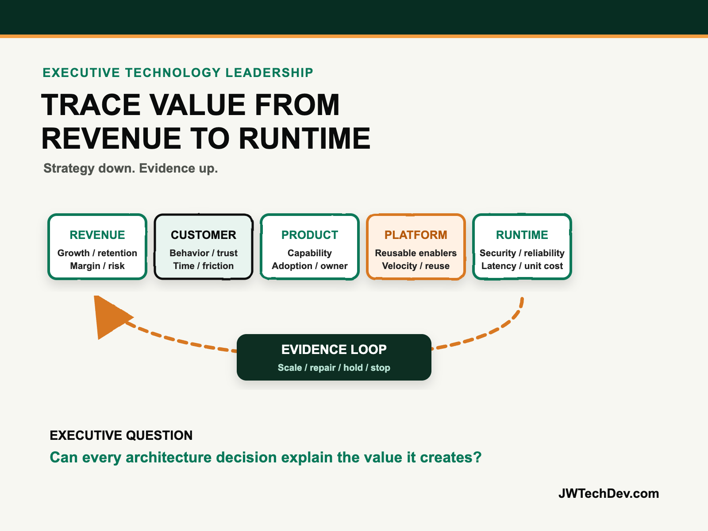

The next enterprise technology leader needs architecture and revenue fluency.
The job is no longer finished when the architecture is secure, resilient, and scalable. Technology leaders must also explain which customer behavior the system changes, which economic result that behavior creates, and what evidence should determine the next dollar of investment.

Quick answer
The strongest enterprise technology leaders can translate in both directions. They translate business strategy down into customer, product, platform, and runtime decisions. Then they translate operational evidence back up into adoption, retention, cost-to-serve, risk, margin, and growth.
I call this the Revenue-to-Runtime Value Trace. It does not turn a technology leader into a salesperson. It makes the leader accountable for connecting technical tradeoffs to the economic system the technology is supposed to improve.
Architecture fluency is necessary, but no longer sufficient
Architecture fluency lets a leader reason about reliability, security, performance, cost, operations, and sustainability. AWS Well-Architected guidance explicitly connects those decisions to business success, and its review process starts with business priorities rather than service diagrams. That is the right foundation.
The gap appears when architecture becomes the final language. A proposal may describe availability zones, identity boundaries, data services, model routing, observability, and deployment patterns without stating which customer friction disappears or which business measure should move. The design can be technically excellent and still be commercially irrelevant.
Revenue fluency closes that gap. It means understanding how the organization creates value well enough to ask sharper technical questions. Does lower latency improve conversion? Does better reliability protect retention? Does a shared platform reduce the cost and time required to launch the next product? Does an AI workflow improve cycle time but increase review cost? Which costs grow with usage, and which business unit should own them?
FinOps calls for unit metrics aligned to organizational goals, not cloud optimization in isolation. The distinction matters. A lower infrastructure bill can be a bad decision if it slows a high-value customer journey. A higher bill can be the right decision if cost per successful transaction falls while growth, reliability, or retention improves.
The Revenue-to-Runtime Value Trace
Use six linked layers. Every funded technology initiative should be traceable from the top to the bottom and back again.
1. Revenue. Name the economic mechanism: acquire customers, improve conversion, retain accounts, increase usage, reduce cost-to-serve, protect revenue at risk, or create a new offer. “Modernize the platform” is not an economic mechanism.
2. Customer. State the behavior or experience that must change. The customer might complete onboarding faster, trust a recommendation, resolve an issue without repeating context, or receive a reliable response during peak demand. This layer keeps the initiative anchored in a real person or operator.
3. Product. Define the capability that enables that change: real-time eligibility, personalized guidance, self-service resolution, safer agent action, or faster market launch. Give the capability an owner and an adoption measure.
4. Platform. Identify the reusable enablers: identity, data products, APIs, model gateways, evaluation services, policy engines, deployment pipelines, and observability. Platform investment earns its place by improving multiple product paths, not by accumulating features.
5. Runtime. Make the architecture decisions explicit. Record reliability target, latency budget, data boundary, security control, capacity plan, recovery objective, model or service choice, and expected unit cost. This is where ambition becomes an operable system.
6. Evidence. Connect technical telemetry and business measures. Track successful outcomes per dollar, cost per resolved case, deployment lead time, adoption, error rate, abandonment, human override, retention impact, and incident cost. Evidence travels upward and decides whether to scale, repair, hold, or stop.
The value trace should work in reverse. If margin is weakening, leaders should be able to follow the signal through customer behavior, product usage, platform consumption, and runtime cost. If latency improves but conversion does not, the business hypothesis may be wrong. If adoption rises while support cost rises faster, the operating model needs attention.
Run one decision review, not two disconnected meetings
Organizations often separate architecture review from investment review. One room examines technical quality; another reviews forecasts and funding. The Revenue-to-Runtime Value Trace gives both groups one decision artifact.
For every major choice, write the expected value path, the architectural tradeoff, the owner, the leading indicator, the unit metric, and the next evidence threshold. Then ask: What customer or business result becomes impossible if we do not make this technical investment? What cheaper design did we reject, and why? What evidence would prove the platform is reusable? At what cost or risk threshold do we stop?
This approach also improves AI investment. The DORA research program describes AI as an amplifier of the surrounding system. Strong internal platforms, clear user focus, fast feedback, and healthy delivery practices matter because model capability cannot compensate for weak operating conditions. A technology leader should therefore fund the whole value path, not just the most visible model or interface.
The output is a real capital decision: scale when value and unit economics are improving; repair when the outcome is valid but the system is weak; hold when evidence is insufficient; or stop when the value path no longer survives scrutiny.
What to do next Monday
- Choose one funded initiative. Pick a platform, cloud modernization, data, or AI program with visible executive attention.
- Name one economic mechanism. Replace broad transformation language with growth, retention, cost-to-serve, risk, or margin.
- Trace the customer change. Write the specific behavior or experience that should improve.
- Map product and platform dependencies. Separate the customer-facing capability from the reusable technical enablers.
- Record the runtime tradeoffs. Include reliability, security, latency, capacity, recovery, and unit cost.
- Pair business and technical measures. Put adoption beside latency, successful outcomes beside spend, and retention beside reliability.
- Set the next funding gate. Decide what evidence earns scale, triggers repair, requires a hold, or ends the work.
The next enterprise technology leader will still need deep architecture judgment. The difference is that architecture will be treated as a means of creating measurable value, not as a destination. Strategy goes down. Evidence comes back up. Leadership happens in the translation.
I will be at AFROTECH in Houston November 2-6. If you are building an enterprise AI platform, global delivery organization, or technical go-to-market motion, I would be glad to compare notes.
Sources checked
Build technology that can explain its value
Explore more practical frameworks for cloud architecture, enterprise AI, governance, and technical leadership.
Get the free starter kit